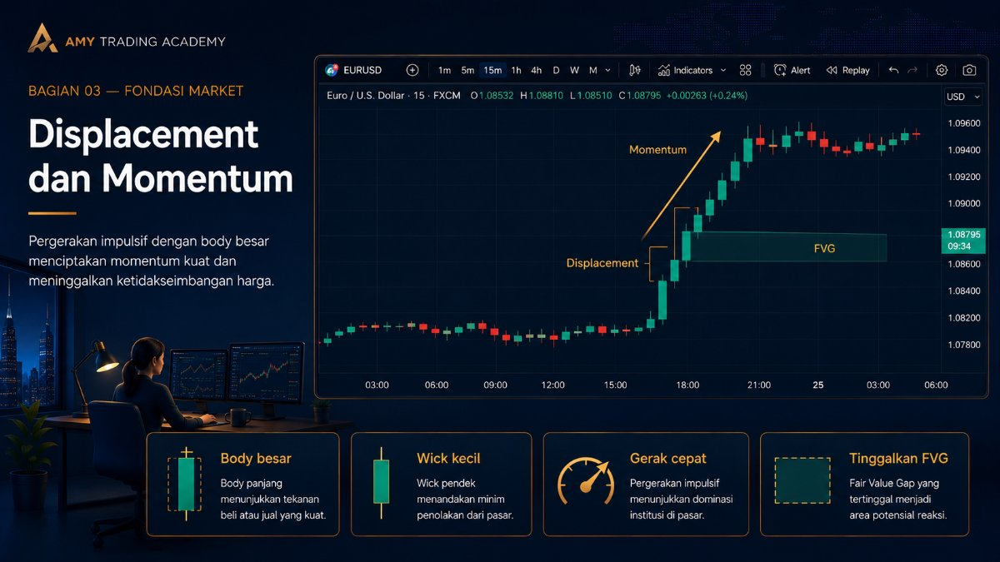
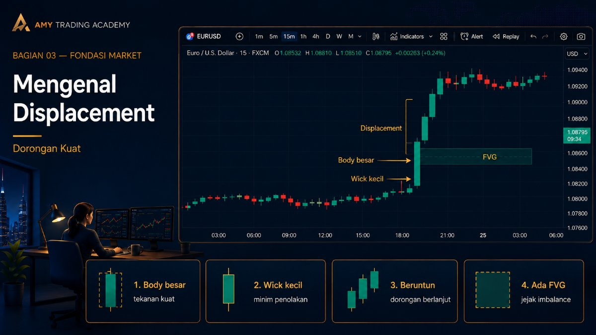
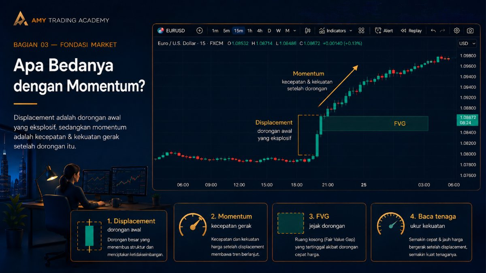
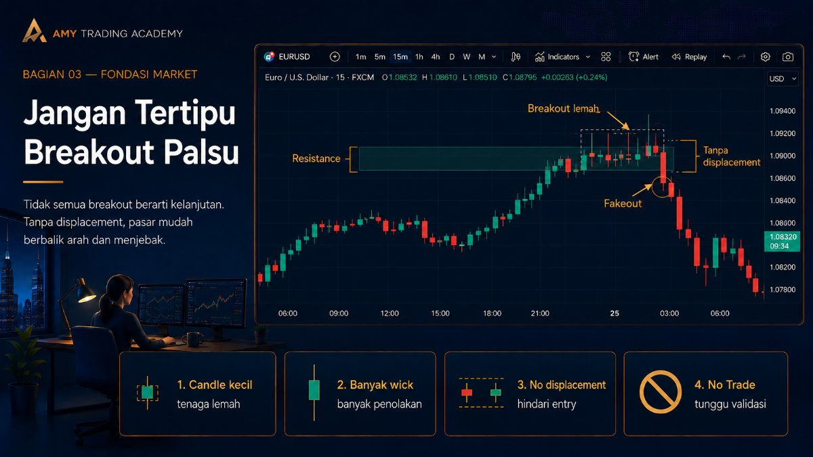
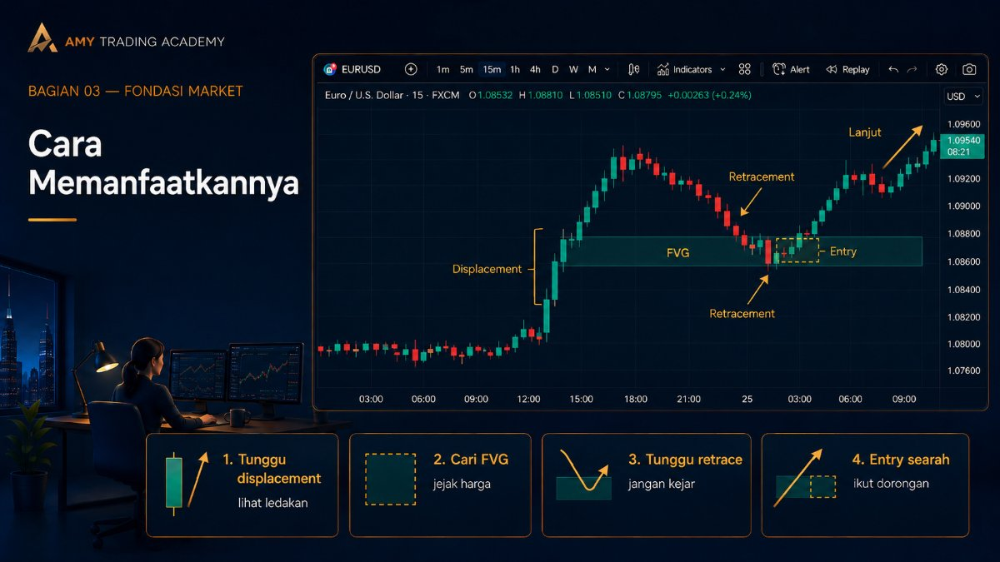

Displacement dan Momentum

Di bab sebelumnya kita belajar bahwa Market Structure Shift (MSS) tidak akan sah kalau tidak ada Displacement. Tapi sebenarnya, apa sih wujud Displacement itu di dalam chart? Dan kenapa ini jadi kunci rahasia trader SMC/ICT?
Sederhananya: Displacement adalah bukti otentik alias "sidik jari" bahwa Institusi Besar (Smart Money) baru saja masuk ke dalam pasar.
Mengenal Displacement (Dorongan Kuat)

Displacement terjadi ketika harga meledak ke satu arah dengan tenaga yang sangat besar dan sangat cepat. Trader retail dengan modal $1.000 atau bahkan $100.000 tidak akan pernah bisa membuat Displacement. Hanya Bank Sentral atau institusi dengan modal miliaran dolar yang bisa melakukannya.
Ciri-ciri Displacement di chart:
- Candle berukuran raksasa dengan badan (body) yang sangat panjang dan tebal.
- Sumbu (wick) atas atau bawahnya sangat kecil, atau bahkan tidak ada sama sekali. (Menandakan tidak ada perlawanan).
- Muncul berturut-turut, misalnya tiga candle hijau besar berjajar.
- Paling Penting: Pergerakan kencang ini selalu meninggalkan "celah kosong" di belakangnya, yang kita sebut sebagai Fair Value Gap (FVG) atau Imbalance.
Apa Bedanya dengan Momentum?

Momentum adalah kecepatan. Jika Displacement adalah aksi "menginjak pedal gas", maka Momentum adalah angka di speedometer kamu (kecepatannya).
Bayangkan sebuah mobil Ferrari di lampu merah. Ketika lampu hijau menyala, pengemudi menginjak gas secara spontan (Displacement). Mobil melesat dengan kecepatan 200 km/jam (Momentum tinggi). Saking kencangnya, mobil itu meninggalkan kepulan asap tebal dan jejak ban hitam panjang di aspal (Fair Value Gap).
Asap tebal dan jejak ban itulah yang kita cari di chart. Itulah jejak kaki para gajah (Smart Money).
Jangan Tertipu Breakout Palsu

Coba ingat-ingat, berapa kali kamu melihat support atau resistance ditembus, lalu kamu ikut entry, eh ternyata harganya balik lagi ke arah asal (fakeout)?
Kenapa itu terjadi? Karena kamu entry di penembusan yang TIDAK memiliki Displacement. Kalau harga menembus resistance hanya dengan candle-candle kecil, loyo, dan banyak sumbu atas-bawahnya, itu berarti bukan Smart Money yang sedang menembus harga. Itu cuma kumpulan trader retail yang sedang berebut. Akhirnya, Smart Money dengan gampang akan membalikkan arah untuk memakan Stop Loss mereka.
No Displacement = No Trade. Kalau tidak ada ledakan harga yang nyata, lebih baik duduk diam.
Cara Memanfaatkannya

Sebagai trader retail yang cerdas, kita tidak bertugas memicu ledakan harga. Kita adalah peselancar. Kita menunggu sampai ombak besar (Displacement) itu muncul di chart.
Ketika kamu melihat Displacement menjebol struktur (MSS), jangan langsung melompat mengejarnya. Biarkan harga lari. Tunggu sampai harga tersebut kehabisan napas dan kembali mundur pelan-pelan (Retracement) ke arah jejak ban atau asap tebal tadi (area FVG). Di situlah kita pasang posisi, bersiap menumpang saat harga kembali melesat kencang searah dorongan awalnya.